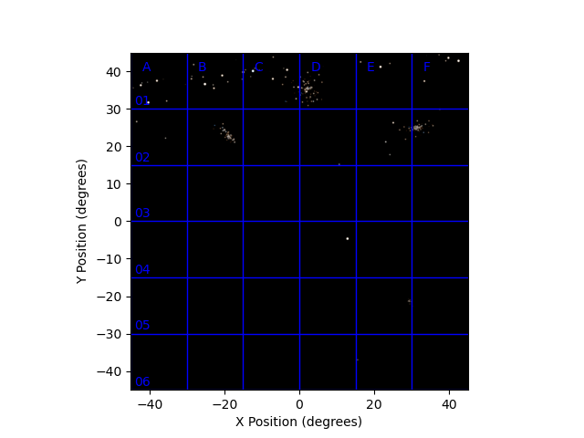
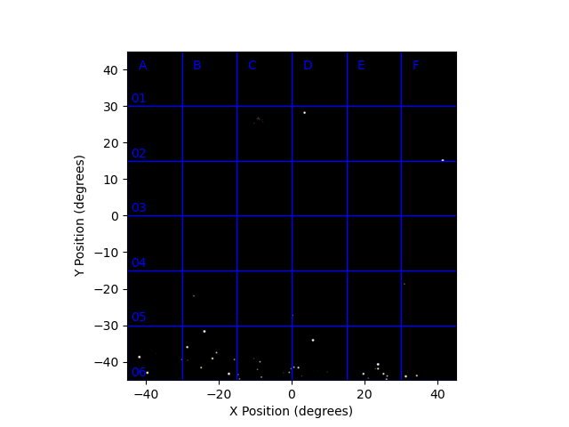
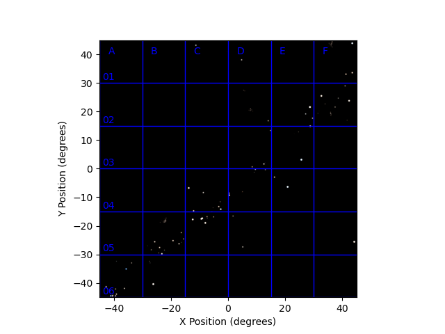
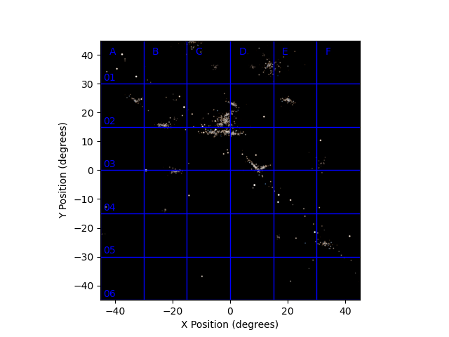
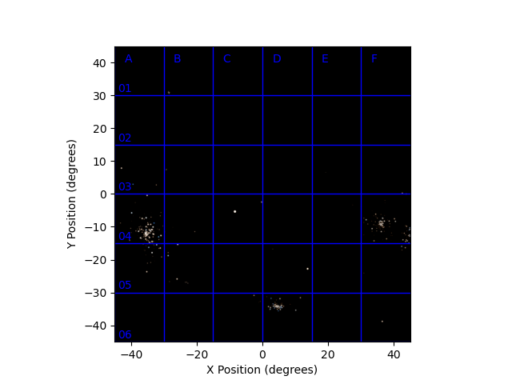
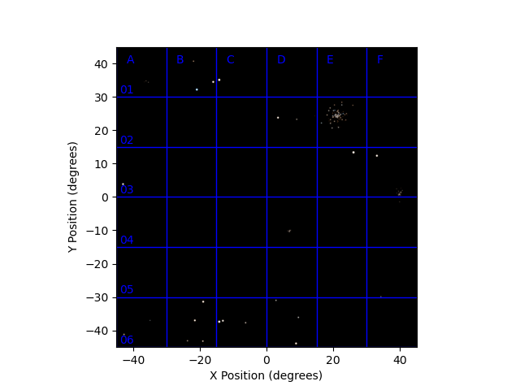

Images from the Wide Field Cameras:
Click on the images for the data on that part of the sky.
Front Camera Image

"Up" image joins the top of this image, "Down" the bottom, "Left" the left and "Right" the right
Back Camera Image

"Up" image joins the top of this image, "Down" the bottom, "Right" the left and "Left" the right
Left Camera Image

"Up" image joins the top of this image, "Down" the bottom, "Back" the left and "Front" the right
Right Camera Image

"Up" image joins the top of this image, "Down" the bottom, "Front" the left and "Back" the right
Up Camera Image

"Back" image joins the top of this image, "Front" the bottom, "Left" the left and "Right" the right
Down Camera Image

"Front" image joins the top of this image, "Back" the bottom, "Left" the left and "Right" the right
X-ray All-sky Camera Data
The X-ray camera did not detect any steady sources. It did detect, however, a
number of extremely short X-ray flashes coming from various parts of the sky.
Each flash lasts 58 milliseconds, but the number of
photons detected from each flash is quite variable.
Here is a list of the flashes detected, with their rough positions and number of photons.
Positions are given by where they would appear in the relevant wide-field camera image.
NB. positions are only accurate to 0.20 degrees (one standard deviation)
The X-ray camera is sensitive to bursts of more than 76 photons only.
| Camera Direction | X | Y | Photons detected |
| | (deg) | (deg) | |
| Up | 43.826 | 0.331 | 691 |
| Front | 15.500 | -37.144 | 728 |
| Up | 23.824 | 36.992 | 304 |
| Down | -7.522 | -23.058 | 84 |
| Down | 11.776 | -2.423 | 204 |
| Front | 12.597 | 10.551 | 171 |
| Back | 5.512 | -33.725 | 135 |
| Back | -35.696 | -24.419 | 438 |
| Right | -40.681 | 28.768 | 90 |
| Up | -23.096 | -27.292 | 667 |
| Right | -2.331 | 36.315 | 210 |
| Front | 7.948 | 40.567 | 111 |
| Right | 11.852 | 40.007 | 807 |
| Back | -4.307 | 39.639 | 82 |
| Left | -17.260 | 36.176 | 124 |
| Up | -35.486 | -11.703 | 139378776 |
| Back | -22.467 | -7.237 | 177 |
| Right | 32.828 | -25.239 | 10915606 |
| Right | 20.306 | 15.335 | 90 |
| Right | -9.755 | -2.553 | 248 |
| Right | 11.809 | 0.238 | 89 |
| Up | 3.515 | 4.336 | 93 |
| Front | -28.429 | 5.807 | 456 |
| Front | 1.650 | 12.702 | 142 |
| Left | 9.179 | 20.766 | 107 |
| Back | 26.826 | -14.183 | 264 |
| Back | -8.935 | 26.471 | 740 |